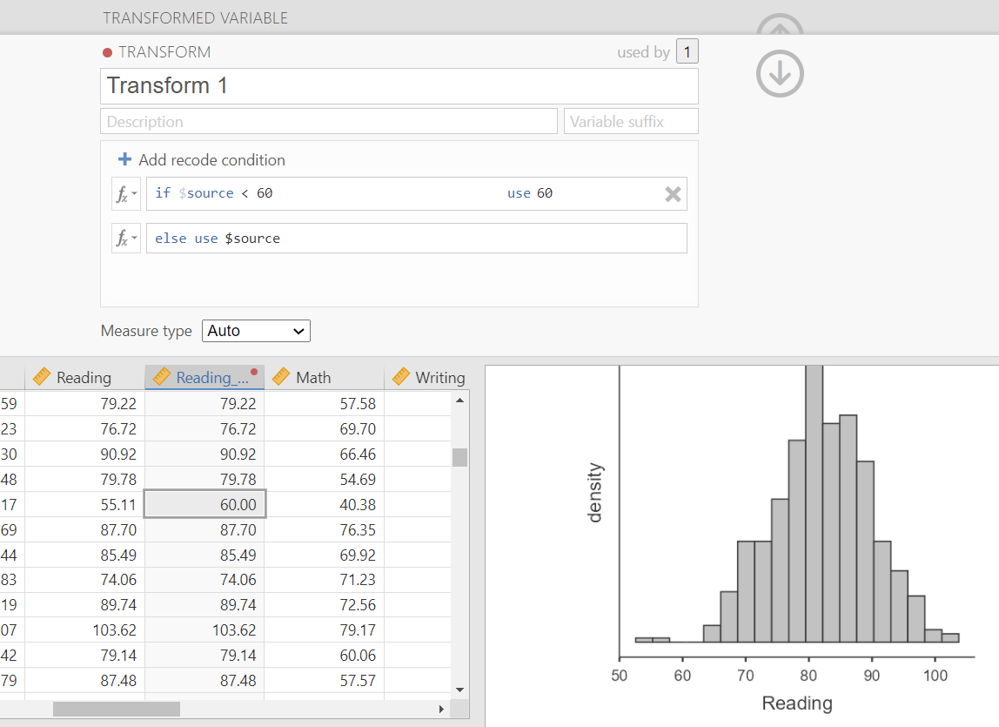

9.3 Violated Assumptions
In the previous section, you learned how to check several assumptions for parametric tests. Now we need to talk about what to do when one of those assumptions is not met.
Violations of assumptions are common. They do not mean your analysis is ruined. They mean you need to pause and make a thoughtful decision.
The worst thing to do is blindly click through jamovi, ignore the assumption checks, and report whatever p-value appears at the end. The second worst thing is to panic and assume every minor assumption issue invalidates the whole analysis.
The goal is not perfection. The goal is a reasonable, transparent decision.
This video also walks through what to do when assumptions are violated.
First, identify the kind of problem
When an assumption is violated, start by asking what kind of problem you have.
| Kind of problem | Example | Usual response |
|---|---|---|
| Wrong test for the variable or design | Categorical DV with a test that requires a continuous DV | Choose a different test |
| Dependence problem | Same people measured twice but analyzed as independent groups | Choose a within-subjects/repeated-measures test |
| Data quality problem | Impossible values, unmarked missing-value codes, data-entry errors | Return to data cleaning and correct/document the issue |
| Distributional problem | Non-normal data, extreme skew, unequal variances | Consider robust, corrected, or non-parametric alternatives |
This distinction matters because different problems require different solutions. A non-normal distribution and a categorical dependent variable are not the same kind of issue.
If you chose the wrong test
Sometimes an assumption violation is really a test-selection problem.
For example, if the dependent variable is categorical but the planned test requires a continuous dependent variable, the solution is not to pretend the categorical variable is continuous. The solution is to choose a test that fits a categorical outcome.
Similarly, if the same participants are measured more than once, do not use a test that assumes different participants in each group.
In these cases, return to Choosing the Correct Test.
If the issue is data quality
Before choosing a different test, make sure the issue is not caused by a problem in the dataset.
Check for:
- missing-value codes that were not marked as missing;
- impossible values, such as an age of 999;
- data-entry errors;
- values that are valid but extreme;
- variables set to the wrong data type or measure type.
You worked on these skills in Cleaning and Preparing Data in jamovi. This is why data cleaning comes before inferential testing.
WarningDo Not Clean Data to Get the Result You Want
Do not remove, transform, trim, winsorize, or recode data just to make a result statistically significant.
Any decision to change data should be justified by the research question, measurement scale, data quality, and analytic plan. You should also be able to explain what you did.
If the issue is outliers
Outliers can distort means, standard deviations, correlations, and test statistics. But not all outliers are errors.
When you see an outlier, ask:
- Is the value impossible?
- Is the value possible but unlikely?
- Is the value valid and meaningful?
- Does the outlier strongly affect the result?
If the value is impossible or clearly caused by a data-entry problem, correct it if you know the correct value or mark it as missing if you do not. If the value is valid but extreme, be cautious about deleting it. That data point may be telling you something important.
In more advanced work, researchers may conduct sensitivity analyses, where they run the analysis with and without influential outliers to see whether the conclusion changes.
If normality is violated
If normality is violated, your options depend on the severity of the violation, the sample size, and the test.
Possible responses include:
- continue with the parametric test if the violation is minor and the test is reasonably robust;
- use a non-parametric alternative;
- use a robust or corrected version of the test when available;
- consider a transformation in more advanced work;
- report the issue transparently.
In this course, you will most often decide between a parametric test and its non-parametric alternative. When we get to the specific inferential tests, we will talk about the most common alternatives for each test.
Examples:
| Planned parametric test | Possible non-parametric alternative |
|---|---|
| Independent t-test | Mann-Whitney U test |
| Dependent t-test | Wilcoxon matched-pairs test |
| One-way ANOVA | Kruskal-Wallis test |
| Repeated-measures ANOVA | Friedman test |
| Pearson correlation | Spearman correlation or Kendall’s tau |
NoteDo Not Overreact to One Normality Check
Remember from Parametric Assumptions that normality can be checked in multiple ways. A significant Shapiro-Wilk test does not automatically mean you must abandon the parametric test, especially if the plots look reasonable and the sample size is not tiny.
Use all of the evidence together: the visualization, skew and kurtosis, Shapiro-Wilk test, Q-Q plot, sample size, and the test you plan to run.
If homogeneity of variance is violated
If homogeneity of variance is violated, you do not always need to switch to a fully non-parametric test.
For some tests, jamovi provides versions that adjust for unequal variances.
Examples:
| Planned test | If variances are unequal |
|---|---|
| Independent t-test | Use Welch’s t-test |
| One-way ANOVA | Use Welch’s ANOVA |
This is why assumption checking affects which result you interpret. You may run one analysis menu in jamovi, but you need to know which row or version of the test is appropriate.
More advanced options
For this course, I mostly want you to know these options exist. I do not expect you to casually transform, trim, or winsorize data in most undergraduate assignments.
Option A: Remove outliers
The first option people often think of is removing outliers. I want you to be careful with that impulse.
Removing outliers may be appropriate when the value is impossible or clearly caused by a data-entry error. For example, if a scale ranges from 1 to 5 and someone has a value of 55, something went wrong.
But if the value is possible and valid, deleting it just because it is inconvenient can distort the data. Outliers may be telling us something meaningful about the sample or the phenomenon we are studying.
Option B: Winsorize or trim the data
Trimming and winsorizing are approaches for dealing with extreme values without necessarily deleting all of the data.
- Trimming removes or sets aside extreme values based on a rule.
- Winsorizing replaces extreme values with less extreme values.
For example, if values below 60 are considered extreme, you might replace values below 60 with 60. If values above 100 and below 20 are considered extreme, you might replace values above 100 with 100 and values below 20 with 20.
In jamovi, this can be done using the Transform feature.

NoteMore Detail About Trimming and Winsorizing
Trimming and winsorizing are real analytic options, but they should be used carefully and transparently. They should not be used just to make a test statistically significant.
If you use either approach, you should be able to explain:
- why the extreme values were a problem;
- what rule you used;
- whether the rule was decided before or after looking at the data;
- how the change affected the interpretation of the variable.
Option C: Transform the data
If violations persist, you can transform the entire variable. A transformation changes the scale of a variable, often to reduce skew or make variance more similar across groups.
Common transformations include:
| Name | Syntax | Corrects positive skew? | Corrects negative skew? | Helps unequal variances? |
|---|---|---|---|---|
| Log | log(X) |
Yes | No | Yes |
| Square root | sqrt(X) |
Yes | No | Yes |
| Reciprocal | 1/X |
Yes | No | Yes |
| Reverse score, then transform | (1 + MAX) - X, then transform |
No | Yes | No |
After transforming your data, you must re-check assumptions using your new variable.
WarningTransforming Changes Interpretation
Transformations can be useful, but they also change the meaning of the variable. A log-transformed score is not interpreted the same way as the original score.
Do not transform data automatically just because one normality test was significant. Transformations should be justified by the research question, the measurement scale, the distribution of the data, and the analysis plan.
Option D: Use a non-parametric test
If the assumption violation is serious and cannot be addressed in a reasonable way, you may use a non-parametric alternative.
Non-parametric tests:
- make fewer assumptions about the shape of the distribution;
- are often more robust to violations of normality;
- may have lower statistical power when parametric assumptions are actually met;
- often answer a slightly different version of the research question.
Parametric tests are usually preferred when assumptions are reasonable, but non-parametric tests may be more appropriate when assumptions are clearly violated.
As we move into specific statistical tests, you will learn the non-parametric equivalents when they are relevant.
A practical decision sequence
When an assumption appears violated, I would generally think through the problem in this order:
- Check whether the planned test matches the variables and design. If not, choose a different test.
- Check for data quality problems. Fix errors and document what you did.
- Look at the severity of the violation. Do the plots show a serious issue, or is the problem minor?
- Choose the appropriate test result. This might be the original parametric test, a Welch correction, or a non-parametric alternative.
- Report your decision clearly. Explain what you checked and what result you interpreted.
There is not always one single correct solution. Your goal is to make a justified and transparent decision.
Looking ahead to writing results
Assumption checking does not end when you choose the test. It also affects how you write about your results.
If assumptions are met, your write-up may be straightforward. If assumptions are violated, readers need to know what you checked, what decision you made, and which result you interpreted.
In Chapter 10, we will focus on how to communicate statistical results clearly in APA style.
TipCheck Your Understanding
- A student planned to run an independent t-test, but the dependent variable is political affiliation. What is the problem?
- A researcher measured the same participants before and after an intervention but planned to run an independent t-test. What is the problem?
- A dataset has a value of 999 for a scale that ranges from 1 to 5. What should you do first?
- Levene’s test is significant for an independent t-test. What test result might you interpret instead?
- Why should transformations not be used just to make a p-value significant?
NoteSuggested Answers
- Political affiliation is categorical, so the planned test does not match the dependent variable. The student should choose a test for categorical data.
- The observations are related because the same people were measured twice. A within-subjects test, such as a dependent t-test, would likely be more appropriate.
- Check whether 999 is a missing-value code or data-entry error. Do not treat it as a real scale score.
- Welch’s t-test, which adjusts for unequal variances.
- Because changing data to produce statistical significance is not a justified analytic decision. Transformations should be based on the research question, measurement, data quality, and assumptions, and they should be reported transparently.